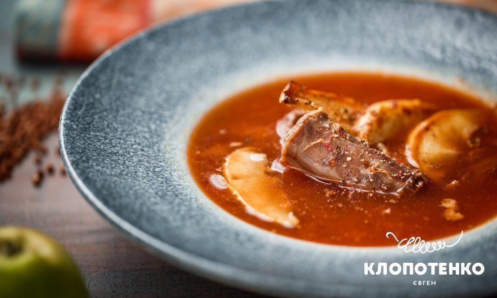

Duck Neck Soup

Description
Difficulty: medium.
Ingredients
- ½ kg / 1 lb. duck necks
- 1 duck carcass or 300 g / 10½ oz. beef bones
- 2.5 liter water
- 100 g / 1 scant cup buckwheat
- 1 onion
- 1 carrot
- ¼ celery root
- 2-3 cloves garlic
- 2 bay leaves
- 5 allspice berries
- 150 ml / ⅔ cup tomato juice
- 2 apples
- salt
Steps
- Wash buckwheat well several times under running water and cover with tomato juice and water at the ratio of 1:2. Leave it to soak for 2 hours.
- In the meantime, cook the duck neck and duck carcass/beef bone broth. Remove the skin from the necks and cut them into 1.5-2-inch-long pieces. Add the rest of the water, onion, garlic, carrot and celery cut into big chunks of any size.
- Add 1 apple, cut into quarters, allspice and bay leaves. Cook the broth for 90 minutes. Discard the vegetables (they have already given their flavor to the broth). Add salt to taste. Add soaked buckwheat and cook for 5 more minutes.
- Cut the second apple into thin slices and fry on a frying pan for 1-2 minutes on each side until soft.
- You can remove the bones from duck necks, but I like to serve them in portion-sized pieces.
- Before serving, put several slices of fried apple into each dish.
Duck Neck Soup
Home